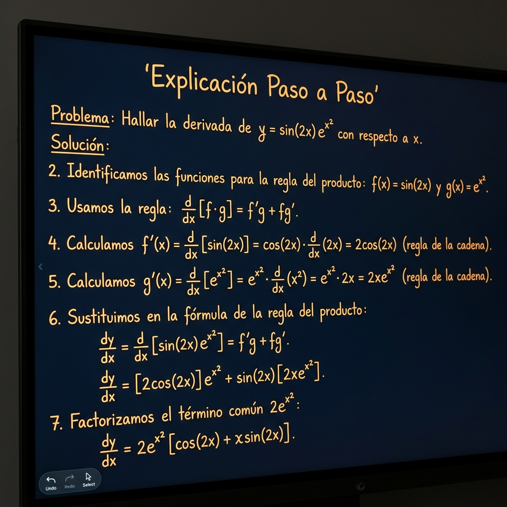
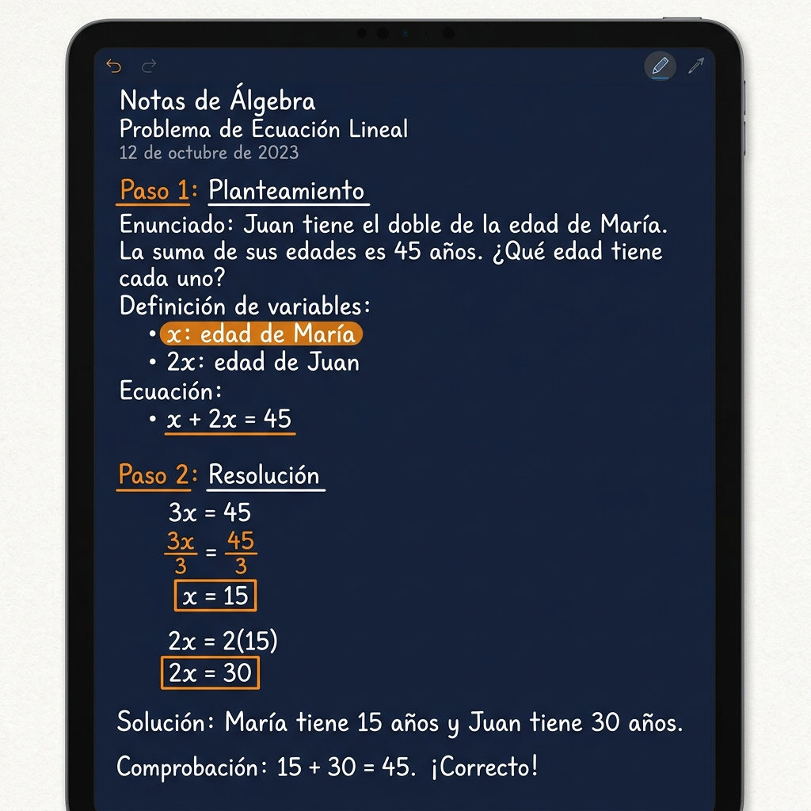
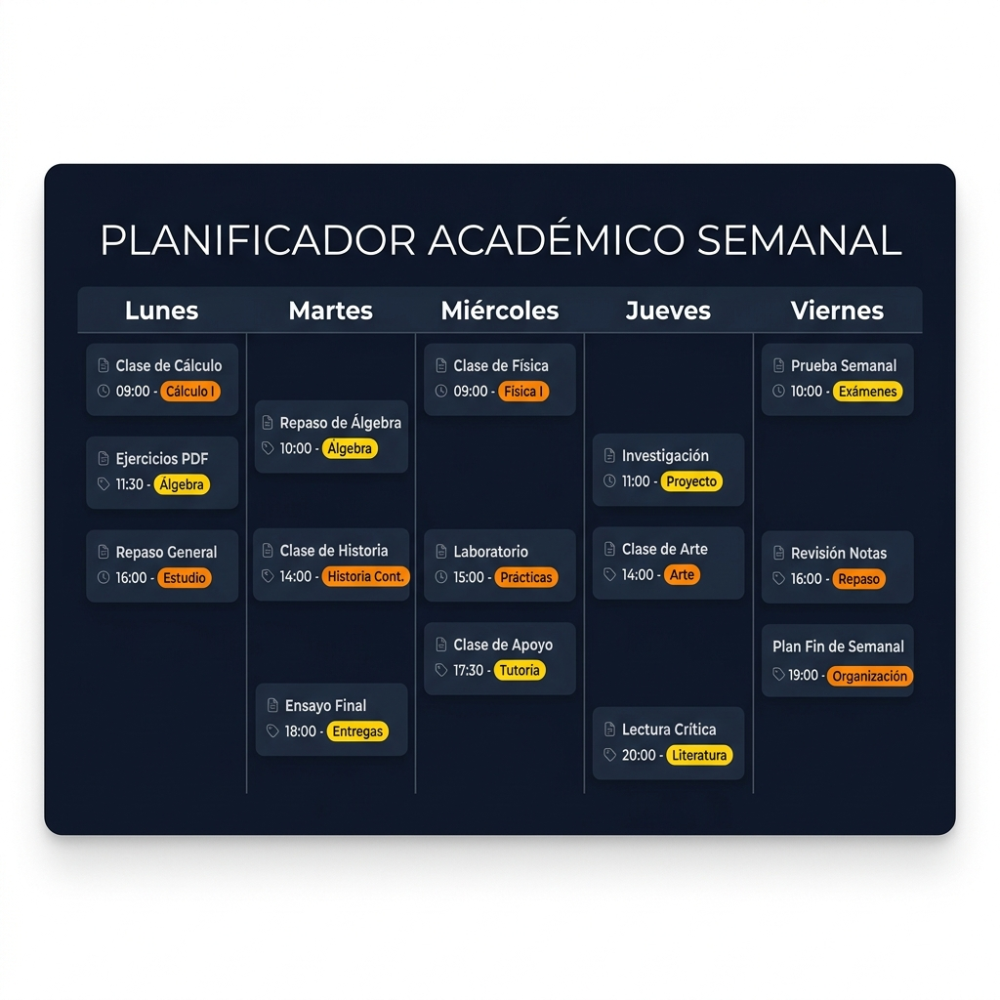

El Sistema de Trabajo de 6 Pasos
Explicamos las matemáticas a partir de la lógica y la práctica rigurosa, no memorizando recetas sin entender.
1. Orientación inicial sin compromiso
Hablamos 30 minutos en una sesión inicial virtual (Meet / Teams) para analizar el temario del centro educativo, los temas que causan más problemas y la urgencia de cara a exámenes.
2. Mapa de lagunas base
Las dudas complejas suelen deberse a fallos algebraicos de cursos previos. Analizamos y tapamos esos huecos antes de sumergirnos en la teoría actual (ej. derivadas o límites).
3. Explicación paso a paso
Explicamos los teoremas y su deducción empleando una tableta digitalizadora de forma interactiva, razonando el porqué de cada paso.

4. Ejercicios tipo examen
Pasamos a la resolución de problemas enfocados en las pruebas reales del instituto o la facultad del alumno, desglosando la justificación formal del resultado.

5. Seguimiento y plan de estudio
Al finalizar la clase, el alumno recibe un documento PDF a color con todas las resoluciones y una propuesta opcional de ejercicios breves para resolver en la semana.

6. Revisión antes de la prueba
Organizamos simulacros de examen cronometrados en las clases previas a la evaluación oficial para pulir tiempos de resolución y serenidad.
¿Deseas valorar tu caso?
Agenda una llamada breve para programar una revisión sin compromiso de los boletines o el temario.